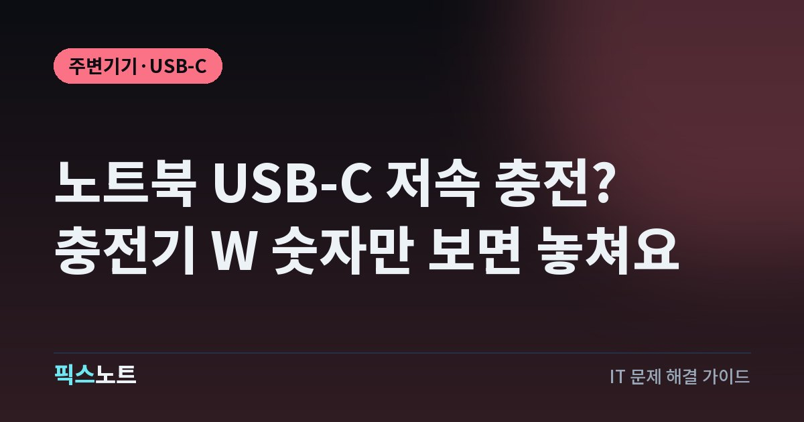

노트북 USB-C 저속 충전? 충전기 W 숫자만 보면 놓쳐요
USB-C 충전 중 배터리가 줄거나 저속 충전 경고가 뜰 때 노트북 요구 전력, 케이블, 충전 포트와 허브를 확인해요.

충전기를 꽂았는데 노트북 배터리가 줄거나 저속 충전 알림이 뜨면 배터리부터 바꾸고 싶어져요. Microsoft는 충전기 호환성뿐 아니라 케이블과 연결 포트, 허브도 원인이 될 수 있다고 안내해요. 새 충전기를 사기 전에 직접 연결로 비교하고, 제품 설명에서 맞춰 볼 조건을 정리했어요.
충전 표시가 떠도 필요한 전력이 충분한지 봐요
Windows 작업 표시줄의 배터리 아이콘에 충전 중이라고 표시돼도 전원에 연결한 채 배터리가 줄어들 수 있어요. Microsoft는 이런 증상이 기기의 요구 조건에 맞지 않는 충전기를 사용할 때 나타날 수 있다고 설명해요. 충전 연결이 감지됐다는 사실과 노트북이 필요한 전력을 공급받는다는 사실을 나눠 확인해야 해요. 먼저 저속 충전 알림이 뜨는지, 사용 중에만 잔량이 줄어드는지, 잠자기 상태에서도 같은지 적어두세요. 같은 조건에서 제조사가 해당 노트북용으로 안내한 충전기와 케이블을 연결해 비교해요. 이 결과를 보기 전에는 배터리 수명이 끝났다고 단정하지 마세요. 충전기를 새로 사는 일도 노트북의 공식 전원 요구 조건을 확인한 뒤로 미뤄요.
노트북 모델의 충전 조건부터 확인해요
USB-C는 단자 모양만 보고 충전 가능 여부를 판단하면 안 돼요. Microsoft의 USB-C 안내도 충전 지원 포트에 연결하고 기기·충전기·케이블이 필요한 규격과 전력 수준을 모두 지원해야 한다고 설명해요. 모델별 설명서에서 USB-C 전원 입력을 지원하는지, 어떤 전원 어댑터를 권장하는지 확인해요. 같은 제조사의 비슷한 이름을 가진 노트북이라도 다른 모델의 조건을 가져오지 마세요. 충전기 라벨의 최대 W 숫자는 비교할 항목 중 하나예요. 노트북이 요구하는 전압과 전류 조합을 충전기가 제공하는지도 공식 사양과 맞춰 봐야 해요. 어느 조합이 필요한지 설명서에서 찾지 못했다면 임의로 추측하지 말고 모델명을 준비해 제조사에 물어보세요.
허브를 빼고 기본 구성으로 직접 연결해요
Microsoft는 외부 허브나 도크를 통한 연결도 저속 충전 또는 충전 불가 원인으로 제시해요. 여러 장치가 연결된 상태를 그대로 두고 충전기만 바꾸기보다 먼저 연결 경로를 단순하게 만들어 봐요.
- 작업을 저장하고 노트북에 연결한 허브나 도크를 분리해요.
- 노트북용으로 안내된 충전기와 케이블을 충전 지원 포트에 직접 연결해요.
- 배터리 알림과 잔량 변화를 확인하고 기존 연결 상태와 비교해요.
직접 연결에서는 정상인데 도크를 거치면 경고가 난다면 도크의 전원 입력과 노트북으로 전달하는 출력 조건을 제조사 문서에서 확인해요. 직접 연결도 안 된다면 도크 하나를 원인으로 확정할 수 없어요. 연결 경로를 하나씩 바꾸면서 어떤 조건에서 경고가 달라지는지 적어두세요.
케이블도 전력 조건을 맞춰 비교해요
충전기가 노트북 요구 전력을 지원해도 케이블이 그 조건을 지원하지 않으면 문제가 남을 수 있어요. Microsoft는 충전 케이블이 충전기나 PC의 전력 요구 조건에 맞지 않는 경우를 원인으로 설명해요. 휴대전화에서 충전이 잘됐던 케이블이라는 사실만으로 노트북에서도 충분하다고 판단하지는 마세요.
- 우선 노트북과 함께 제공됐거나 제조사가 해당 모델에 맞게 안내한 케이블을 사용해요.
- 교체 케이블은 제품 사양에 표시된 충전 지원 전력을 확인해요.
- 충전기는 그대로 둔 채 케이블만 바꿔 저속 충전 알림이 달라지는지 비교해요.
모양, 두께, 가격만 보고 지원 전력을 추정하지 마세요. 판매 페이지의 충전 지원 설명과 제조사 사양이 불분명하면 구매 전에 정확한 모델을 확인해요.
멀티포트 충전기는 총출력과 포트 출력을 나눠 봐요
충전기 이름에 적힌 W 숫자가 모든 포트에서 동시에 나오는 전력인지는 제품별로 확인해야 해요. 예를 들어 Anker Prime 100W GaN Wall Charger의 공식 설명은 여러 기기를 충전할 때의 총출력을 100W로 안내해요. 이 숫자만 보고 연결한 기기마다 각각 100W를 받는다고 읽으면 안 돼요. 여기서는 특정 제품을 추천하려는 것이 아니라 사양표를 읽는 기준으로 이 예를 드는 거예요. 사용 중인 제품의 포트별 출력과 동시 연결 조합표를 찾아 노트북에 연결한 포트가 어떤 조건인지 살펴봐요. 휴대전화 등 다른 장치를 분리하고 노트북 하나만 연결한 결과도 비교해요. 조합표에 노트북이 요구하는 조건이 없다면 최대 출력 숫자만 맞는 제품을 바로 구입하지 마세요.
잠자기 상태와 사용 중 충전을 비교해요
Microsoft는 충전 속도를 높이는 방법 중 하나로 PC가 잠들어 있거나 꺼져 있을 때 충전하는 방식을 안내해요. 사용하면서 잔량이 줄어드는지 확인했다면 작업을 저장하고 잠자기 상태에서 충전한 결과도 비교해 볼 수 있어요. 다만 잠자기 상태에서 배터리가 늘었다는 사실이 충전기 호환성을 보장하지는 않아요. 같은 충전기와 케이블로 사용 중에는 저속 충전 알림이 뜨는지도 함께 봐야 해요. 사용 상태를 바꾼 결과는 문의할 때 도움이 되는 비교 기록이에요. 게임을 종료했으니 정상 충전기로 바뀌었다거나, 화면을 껐으니 필요한 규격을 갖췄다고 판단하지 마세요. 업무 중에도 안정적으로 쓸 전원이 필요하면 제조사의 모델별 권장 전력과 실제 연결 조건을 기준으로 선택해요.
Surface의 안내를 다른 노트북에 그대로 적용하지 마세요
Surface 공식 문서는 USB-C 포트가 있는 지원 기기에 USB Type-C PD 충전기를 사용할 수 있다고 안내하면서, 모델에 맞는 권장 전력을 확인하라고 설명해요. 낮은 출력의 충전기나 USB-A 연결은 충전이 느리거나 되지 않을 수 있어요. 이 안내는 Surface 제품을 위한 것이므로 다른 제조사 노트북의 지원 조건을 증명하는 자료로 쓰면 안 돼요. Surface 안에서도 모델별 전원 요구 조건을 확인해야 해요. 한 제품의 빠른 충전 시간이나 배터리 비율을 모든 USB-C 노트북의 기준으로 가져오지 마세요. 다른 노트북을 사용한다면 그 제조사의 모델별 전원 설명을 확인해요. 공통으로 비교할 것은 충전 지원 여부, 권장 전력, 케이블 조건, 직접 연결 결과예요.
구매나 수리 전에는 이 정보를 모아요
기본 충전기와 직접 연결해도 계속 경고가 뜨면 노트북 제조사에 점검을 문의해요. 모델명, 충전기 모델과 출력 라벨, 케이블 사양, 연결 포트, 허브 사용 여부를 정리해요. 가능하면 저속 충전 알림 문구와 사용 중·잠자기 상태에서의 차이도 함께 알려주세요. 이 기록이 있어야 충전기 교체가 필요한지, 케이블이나 포트 점검이 먼저인지 상담할 수 있어요. 충전기 출력이 더 크다는 이유만으로 호환성이 확인된 것으로 생각하지 마세요. 구매 전에는 노트북 공식 조건과 충전기·케이블 사양을 나란히 맞춰 보고, 확인하지 못한 조건은 판매자나 제조사에 질문해요. 자료가 없는 조합을 임의로 추천하기보다 확인된 구성으로 비교한 뒤 다음 조치를 정하는 편이 좋아요.
자주 묻는 질문
노트북에 충전기를 꽂았는데 배터리가 줄어드는 이유는 뭔가요?
Microsoft는 충전기 출력이나 호환성, 케이블 조건 등이 노트북 요구 사항에 맞지 않을 때 이런 현상이 생길 수 있다고 안내해요. 기본 충전기와 케이블을 직접 연결해 같은 증상인지 먼저 비교해요.
100W 충전기면 모든 USB-C 노트북에 쓸 수 있나요?
최대 출력만으로는 판단할 수 없어요. 노트북의 USB-C 충전 지원 여부와 요구 전력, 충전기가 제공하는 전압·전류 조합, 케이블 조건을 함께 확인하고 멀티포트 제품은 연결 조합별 출력도 살펴요.
USB-C 도크를 연결할 때만 저속 충전이라고 떠요
Microsoft는 허브나 도크를 통한 연결도 가능한 원인으로 안내해요. 충전기를 노트북의 충전 지원 포트에 직접 연결해 비교하고, 직접 연결이 정상이면 도크의 전원 입력과 노트북 전달 출력 조건을 확인해요.